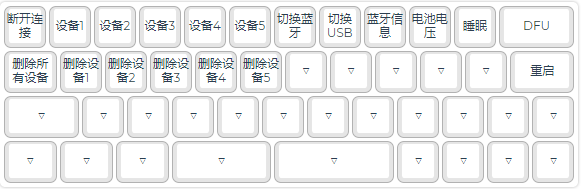
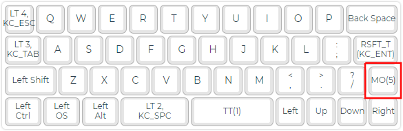
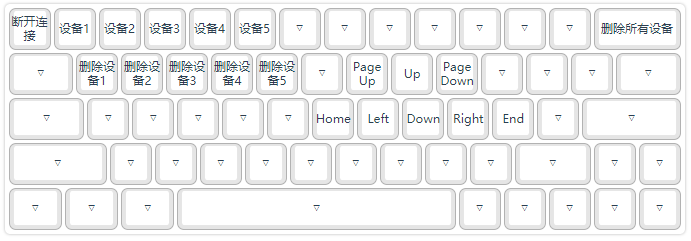

蓝牙
WOODSKB系列双模键盘支持蓝牙5.0，可以配对5个设备。设备配对/切换键可以自定义，可以为5个设备分别设定对应的按键。
1. 设置键
在键位设置一节中，介绍了设置键位的基本方法。在键位设置界面中，蓝牙相关的键在“键盘设置”页中。如下图：
蓝牙相关键的功能是：
| 按键 | 功能 |
|---|---|
| 设备1-5 | 配对/连接设备 |
| 删除设备1-5 | 删除所保存的某个配对设备信息 |
| 删除所有设备 | 删除所保存的所有配对设备信息 |
| 断开连接 | 关闭蓝牙广播，断开设备连接 |
| 蓝牙信息 | 以自动打字的方式输出当前蓝牙连接状态 |
| 停用蓝牙 | 停用蓝牙（只是不向蓝牙连接的主机发送按键，而不是关闭蓝牙连接） |
| 启用蓝牙 | 启用蓝牙（与前述停用蓝牙相对） |
| 切换蓝牙 | 切换蓝牙启用/停用状态 |
配置工具的默认键位配置中，
- WOODS40蓝牙相关的键设置在第5层：

默认的切换到第5层的按键在第0层右下位置：

所以在默认情况下，按下MO(5)+Q，就是配对设备1。
- WOODS60蓝牙相关的键设置在第2层，默认的切换到第2层的键是按住Capslock键。所以在默认情况下，按下
Capslock+1，就是配对设备1。

您也可以重新定义按键位置。
2. 配对和切换
设置好配对按键后，想配对（连接）哪个设备，就按哪个键。
第一次配对设备时，在要连接的设备上搜索蓝牙设备，会发现一个名为“WOODS40_BLE”或“WOODS60_BLE”的设备，连接它即可。
指示灯1——5（对于WOODS40是QWERT下面的灯，对于WOODS60是数字1——5下面的灯）会指示配对状态：
- 按下配对设备键后，对应的指示灯亮起。比如WOODS40上，按下“设备1”键，Q键下的灯亮起。
- 连接上设备后灯熄灭。或者超时没有连接成功，灯也会熄灭。
3. 删除配对设备
设置好删除设备按键后，想删除哪个设备，就按哪个键。
- 如果正连接着这个设备，将会断开连接。
- 如果删除的是已保存的设备，对应的指示灯会亮一下；如果要删除的这个设备不存在，则灯不会亮起。（WOODS60指示灯没有这个功能）
- 如果删除所有设备，则0——6号指示灯全部亮起。（WOODS60指示灯没有这个功能）
4. 其他功能
1. 自动连接
- 键盘开机/重启/从休眠中唤醒时，如果没有插USB数据线，将自动尝试连接关机前/重启前/休眠前成功连接着的设备。
- 如果删除所有配对设备，或者按了“断开连接”键，即在没有连接着设备的情况下，再关机/重启/休眠，则键盘启动时不会自动连接设备。
2. 输出蓝牙信息
可以分配一个“蓝牙信息”按键。按下时会以自动打字的方式输出当前蓝牙连接状态。
| 输出 | 含义 |
|---|---|
| noconn | 当前没有连接设备。当然，是在连接着数据线时才可以输出。 |
| dev1 —— dev5 | 当前连接着的设备的设备号 |
| (dev1) —— (dev5) | 当前连接着的设备的设备号，但是处于停用状态，即按了“停用蓝牙”键。是在连接着数据线时才可以输出。 |
3. 停用/启用/切换蓝牙
蓝牙相关的键里有三个键：停用蓝牙、启用蓝牙、切换蓝牙。停用蓝牙可以在蓝牙连接上设备的情况下，停止向连接着的设备发送按键数据。
同理，还有一套停用/启用/切换USB的键，与此功能类似，只是控制的是USB的数据输出。
它们的一种应用场景是：有线和蓝牙同时连着同一个电脑，此时可以停用蓝牙，只用有线，否则蓝牙和有线都会传一遍按键数据。
或者是：在同时有线连一台电脑，蓝牙连另一台，就需要用到切换蓝牙、切换USB，来控制在两台机器上的输入。否则按下一个键将同时传输给两台电脑。
要注意的是，这个停用状态并不持久化保存，键盘开机/重启/从休眠中唤醒时，就恢复到启用的状态。